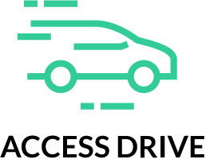

<ion-content>
  <section class="page-home">
    
    <form (ngSubmit)="logForm()">
      <div class="item-wrapper">
        <ion-input class="phoneNumber" placeholder="Numéro de téléphone" [(ngModel)]="form.number" name="number"></ion-input>
      </div>

      <div class="phoneSaveWrapper item-wrapper">
        <ion-checkbox class="phoneCheck" [(ngModel)]="form.save" name="save"></ion-checkbox>
        <ion-label class="phoneSave">Se souvenir de moi</ion-label>
      </div>

      <div class="item-wrapper">
        <button class="connect" ion-button>Se connecter</button>
      </div>
    </form>

    <div class="separator"></div>

    <div class="bottomMess">
      Vous pouvez également vous connecter avec l'aide d'un réseau social
    </div>

  </section>
</ion-content>
